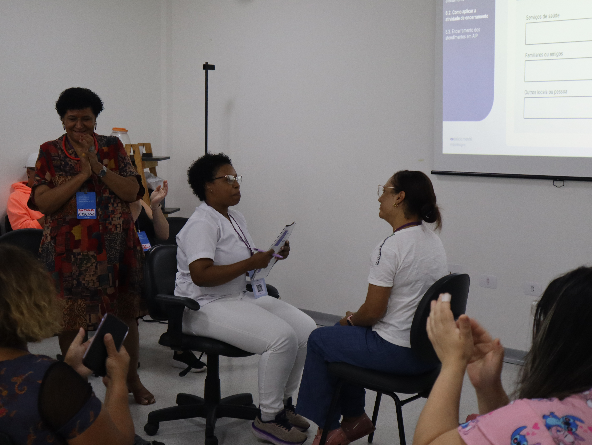

A ACS tem 8 a 12 visitas domiciliares por dia e nenhuma qualificação em escuta. A enfermeira coordena a equipe e aplica rastreio "que viu na internet". O médico tem 15 minutos de consulta e zero retaguarda. Uma qualificação genérica não cabia em nenhuma das três rotinas.
Analisei as respostas de um questionário institucional já existente e mais de 30 documentos institucionais de pesquisas anteriores, compatibilizando esses aprendizados com as diretrizes de escopo de trabalho previstas pelo SUS e com as barreiras e facilitadores identificados no território — usando Jobs to be Done, coconstruídos com profissionais de saúde durante 3 oficinas que facilitei, para desenhar as trilhas por categoria profissional. Documentei o diagnóstico, o levei ao roadmap de implementação e coordenei a implementação.
Sem contratar especialista novo. A trilha tinha que caber na equipe mínima que já existe em qualquer UBS — ACS, enfermeiro e médico de família — e não podia consumir os já escassos 15 minutos de consulta do médico. Pensada também para a escala do programa: qualificar todos os profissionais geraria uma customização enorme, inviável de replicar para outros territórios.
ACS: presencial de 4 dias com tutoria semanal por 3 meses, focado em rastreio em visita domiciliar. Enfermeiro: formato híbrido de 5 dias com tutoria pedagógica semanal por 5-6 meses, incluindo matriciamento e PTS. Médico de família: 2 encontros remotos síncronos, focados em estratificação de risco e manejo de psicofármacos com retaguarda da rede especializada.
Cada trilha usa protocolos de rastreio padronizados (PHQ-9, GAD-7) adaptados à profundidade de atuação de cada categoria.
Distribuir a qualificação entre as três categorias em vez de concentrar em uma só, para não sobrecarregar nenhum profissional específico e aproveitar as barreiras e facilitadores de cada escopo de categoria.
Selecionar profissionais por território, respeitando a lógica de cobertura da APS — em vez de escolher por interesse e conveniência individual.
Implementar unidade a unidade, de forma escalonada, para viabilizar retaguarda especializada e acesso ao cuidado em saúde mental em todos os territórios do SUS.
Adaptação da Terapia Interpessoal (TIP) para o escopo da APS — não forma terapeutas, mas capacita profissionais não especialistas a oferecer um acolhimento breve e resolutivo para sofrimento emocional leve a moderado. Qualificação presencial de 20h seguida de 3 a 4 meses de estágio com tutoria prática contínua.
O que funciona para psicólogos e assistentes sociais não funciona para técnicos de enfermagem ou ACS. A evasão no estágio supervisionado varia bastante entre categorias — reforçando que agenda protegida, sala sigilosa e apoio da gerência são condição de implementação, não diferencial.